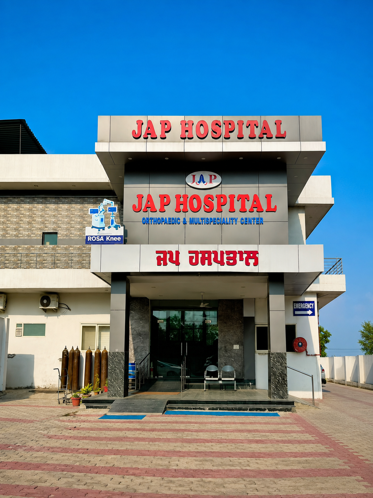
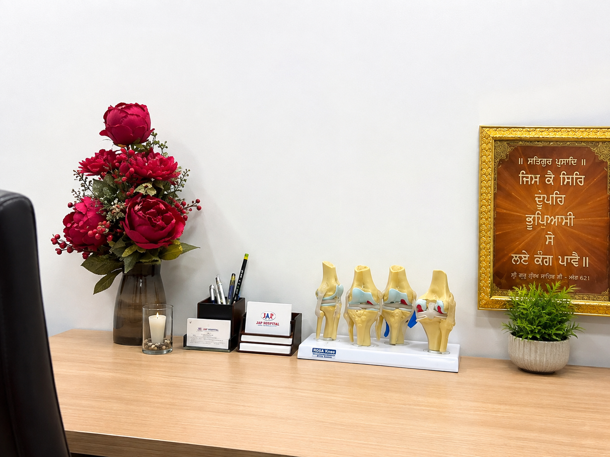

Our Mission
Treating the Patients
Using validated knowledge, resources & skills for their satisfaction.
JAP Hospital is positioned around joints, mobility and recovery, with specialist orthopaedic care supported by diagnostics, surgery, nursing, physiotherapy and rehabilitation.

 Bhogpur · Jalandhar–Doaba
Bhogpur · Jalandhar–DoabaJAP Hospital’s identity puts orthopaedic expertise, joint replacement and robotic-assisted knee care at the centre, while retaining the wider hospital support patients need throughout their treatment journey.
Using validated knowledge, resources & skills for their satisfaction.
With access, reliability, dignity, safety & affordability.
V3 deliberately keeps your existing hospital image filenames so your authentic photos remain central to the design.




ECHS support is subject to applicable referral, authorisation and documentation requirements.
Meet the orthopaedic specialist leading the hospital’s joint and spine care programme.